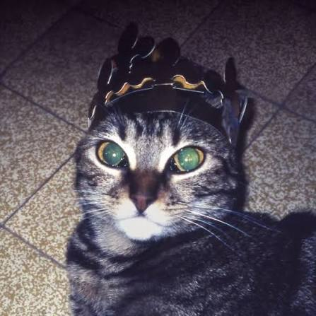
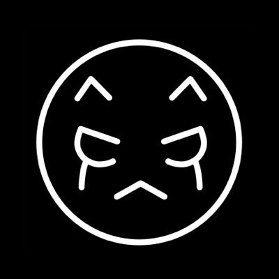
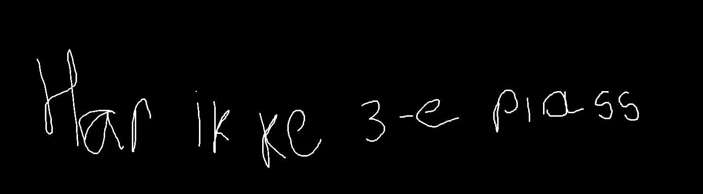

Two Door Cinema Club are a Northern Irish rock band formed in Bangor, County Down, in 2007. The band consists of Alex Trimble (vocals, rhythm guitar, beats, synths), Sam Halliday (lead guitar, backing vocals), and Kevin Baird (bass, synths, backing vocals).
Mitt favoritt sangene fra dem:

TThe Vanished People is an Italian independent music duo formed in 2022 by brothers Jacopo Maria Gaeta and Piero Bonanni. The Milan-based project blends indie and alternative rock with J-rock, jazz, and electronic music to create cinematic, story-driven tracks. They frequently collaborate with international vocalists and are widely recognized online for their multi-genre sound and musical partnerships in the video game industry.
Mitt favoritt sangene fra dem:
